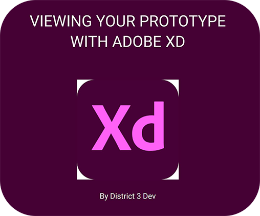

VIEWING YOUR PROTOTYPE WITH ADOBE XD 2022
Not everyone is familiar with Adobe XD, and certainly not our clients who seek us to design their vision. Creating a prototype means little if our client doesn't know how to use the software to view it. So I created a short instructional document on how to view a website prototype through Adobe XD.
View the document.
